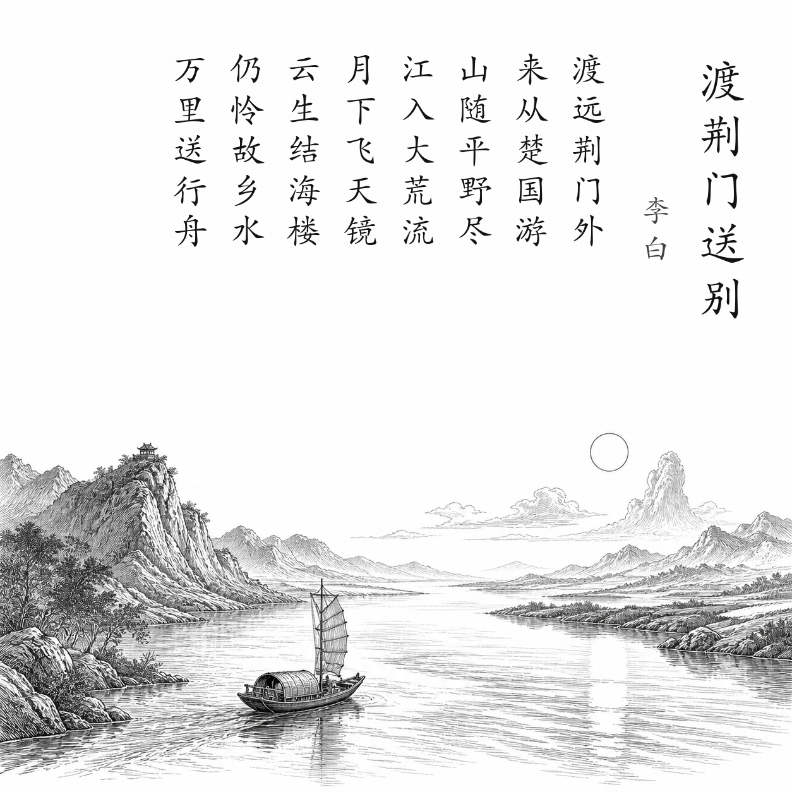

唐 · 李白
渡荆门送别
渡远荆门外，来从楚国游。
山随平野尽，江入大荒流。
月下飞天镜，云生结海楼。
仍怜故乡水，万里送行舟。
白话翻译
乘舟远行，渡过荆门之外，来到古代楚地游历。
连绵山岭随着平原出现而渐渐消失，江水奔入辽阔无边的原野。
江中月影仿佛从天飞下的明镜，云霞变幻如海市蜃楼。
我仍深深爱恋故乡的江水，它仿佛不远万里送着我的行舟。
为什么写这篇古诗文
李白青年时第一次大规模离开蜀地远游。船过荆门后，狭窄山峡突然展开为平原，壮阔景象带来新鲜与兴奋；结尾把江水写成故乡的送行者，表达离蜀后的眷恋。
关于作者
李白（701—762），字太白，号青莲居士，被誉为“诗仙”。他一生漫游各地，诗歌想象瑰丽、气势奔放，尤其善于把个人情感与宏阔山河融为一体。